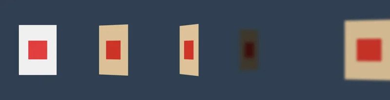
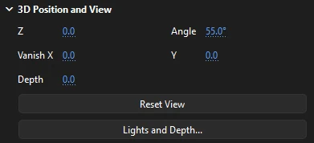

Drawing
3D rotation and translation
Turn a movie clip about its horizontal and vertical axes, or push it back into the stage, and Phoenix draws it in perspective. Add a light, shadows and depth of field for a scene with real depth.

3D works on movie clip instances only. A graphic or button, a group, a shape or text can't be turned in 3D; convert it to a movie clip first (, F8), or change an instance's Type to Movie Clip on the Object tab. See Symbols.
Each clip has three 3D values: its turn about its horizontal axis (X) and about its vertical axis (Y), and its depth (Z). Turning a clip flat on the stage is still done with ordinary rotation, using Free Transform or the Transform panel.
The 3D tools
The two 3D tools share a slot in the toolbox; hold the button down to choose between them. Both work on one movie clip at a time: press on the clip and drag. Pressing on anything that isn't a movie clip says so in the status bar.
- 3D Rotation (W)
- Drag left or right to turn the clip about its vertical axis, up or down to tip it about its horizontal axis, half a degree for each pixel you drag on screen. It turns about its transformation point; move that point with the Free Transform tool first to turn it about an edge, like a door on its hinges. While you work, two lines through the transformation point and a ring around it show the axes. Alt-click a clip to set it flat again (its depth stays).
- 3D Translation (G)
- Drag up to push the clip into the stage, down to bring it nearer, a pixel of depth for each pixel you drag on screen. A clip further in draws smaller and closer to the vanishing point. A dot in a ring marks the depth axis, seen end on. To move a clip across the stage, use the Selection tool as usual.
Each drag is a single step to undo. Turns are about the stage's own axes; there is no switch between global and local axes, and no handles to drag a clip along X, Y or Z separately. For an exact depth, type it into the Object tab.
3D Position and View

With a movie clip selected, the Object tab of the Properties panel has a 3D Position and View section. Z and Depth belong to the selected clip; the rest is the document's view, shared by all its clips.
- Z
- How far the clip is from the stage: above 0 is further away, below 0 nearer to you.
- Depth
- How thick the clip is. Its edges are drawn back that far behind its face and shaded by the lights, for a card with a visible edge or a solid block of a logo. 0 is a flat card.
- Angle
- The perspective angle, 1° to 179° (55° unless you change it). Wider exaggerates depth; narrower flattens it. It applies to clips turned with Phoenix's 3D tools; the 3D motion tweens of FLA files keep the file's own view angle.
- Vanish X, Y
- The vanishing point that depth recedes to, for the 3D motion tweens of FLA files (see below). 0, 0 stands for the middle of the stage. Clips turned with Phoenix's 3D tools always recede to the middle of the stage for now.
- Reset View
- Puts the vanishing point back in the middle of the stage and the angle at 55°.
- Lights and Depth...
- Lights, shadows and depth of field; see below.
Lights, shadows and depth of field
Lights and Depth... sets three things for every clip turned or moved in 3D in the document:
- Lights. Each clip is shaded by how squarely it faces the light, so a card swinging round catches the light and darkens as it turns edge on. From says where the light comes from (round from above: 90° from the right, -90° from the left), Height how far out toward you it is (90° straight from the front, 0° grazing), Strength how strong it is, Ambient how bright a clip turned away still is, and Color tints the light, warm or cool. Choose Light 2, 3 or 4 under Light and tick On for more lights: a warm key light and a cool one from the other side, each shading the clips in its color, added up. Clips lying flat on the stage are not shaded.
- Shadows. With Clips cast shadows on turned clips behind them ticked, a movie clip nearer the viewer (a lower Z) casts a soft shadow on a turned clip behind it, thrown away from each light: further and softer the further apart the two are. Darkness sets how dark, Softness how much blur for each hundred pixels between them.
- Depth of field. With Blur 3D movie clips away from a focus depth ticked, clips blur the further they are from the Focus depth (a Z), by Blur pixels for each hundred pixels nearer or further: a sharp title with a soft background pushed back behind it. Key the clips' Z to rack focus as they move.
The lesson 3D cards in the light walks through all of this step by step.
Animating in 3D
A clip's 3D turn and depth are keyed on keyframes like any other property. Set them on two keyframes and make a classic tween between them, and the clip turns and moves smoothly from one to the other, its shading, shadows and blur following along. See Classic tweens.
Motion tweens in FLA files can carry 3D of their own: Rotation X and Y and a Z position. Phoenix plays them in perspective, turned about the clip's transformation point and seen at the file's view angle and vanishing point, on the stage and in every export. Keying 3D rotation and Z into a motion tween in Phoenix is not available yet, and the Motion Editor does not show those properties. See Motion tweens.
In files and exports
- Phoenix documents (.phx) keep everything on this page.
- FLA and XFL files keep a clip's 3D turn, depth and thickness, and the document's angle, lights, shadows and depth of field, as Phoenix's own settings beside the clip's ordinary placement. Phoenix reads them back, but another app opening the file shows the clips flat, unshaded, sharp and without shadows. When you save such a document as FLA, Phoenix lists the Phoenix features it uses before it writes.
- A clip that an FLA file places with a 3D matrix opens where it belongs, and saves back as it was, though Phoenix draws it without its perspective unless a motion tween turns it.
- Exports. Images, image sequences and movies show the 3D as the stage does. An SWF movie gets a scene with 3D as frames of vector shapes, and an HTML5 page gets the layers with turned clips as pictures. See Export.